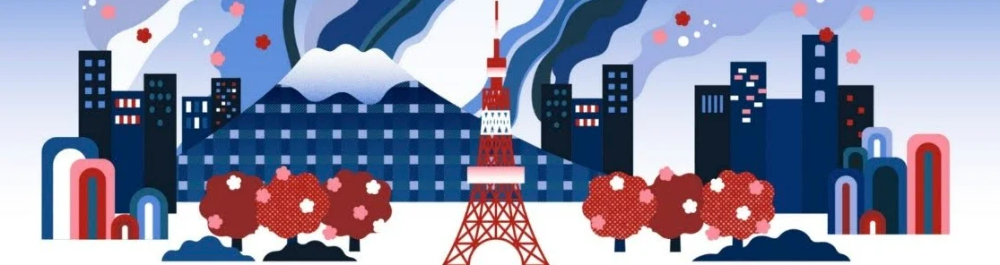
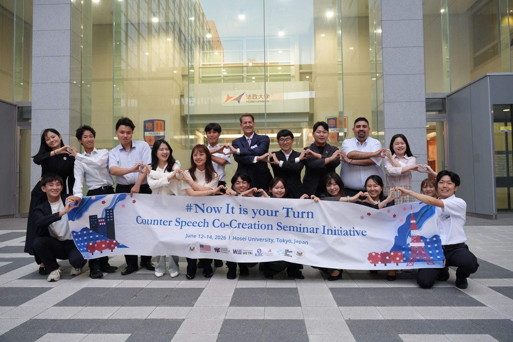
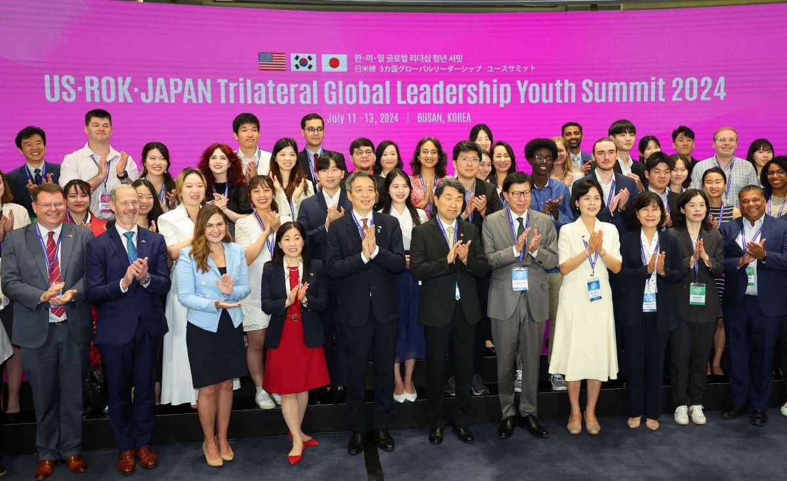
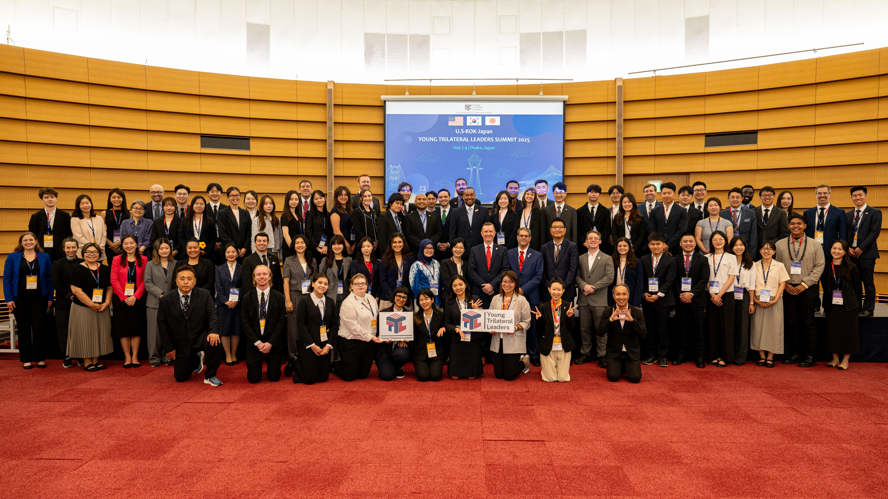

From summit statements to youth-led action 首脳間の対話を、若者の実践へ
TogetherWeTri was started in Korea in 2025 by alumni of the Japan–U.S.–Korea Young Trilateral Leaders (YTL) Summit. Active since March 2026, the Japan Branch connects students, young professionals and local communities in Japan with peers in the United States and Korea, and turns trilateral priorities into work people can join. TogetherWeTriは、日米韓ヤング・リーダーズ・サミット（Young Trilateral Leaders Summit：YTL）の修了生が2025年に韓国で立ち上げたイニシアティブです。2026年3月に活動を開始した日本支部は、日本の学生・若手社会人・地域社会を米国・韓国の仲間とつなぎ、日米韓協力の優先課題を誰もが参加できる活動へと落とし込みます。

Trilateral cooperation is agreed at the top. We turn them into action.日米韓の協力を、首脳間の合意から現場での実践へ。
Since the 2023 Camp David Summit, leaders have reaffirmed the importance of trilateral cooperation across a range of shared priorities. Much of this cooperation takes place through high-level government dialogue. We work to build the people-to-people ties that keep trilateral cooperation strong across administrations. 2023年のキャンプ・デービッド首脳会談以降、日米韓の首脳は、幅広い共通課題における三か国協力の重要性を改めて確認してきました。こうした協力の多くは、政府間のハイレベルな対話を通じて進められています。私たちは、政権が変わっても揺らぐことのない日米韓協力を支えるため、若者や市民の間に、人と人とのつながりを築いていきます。
A platform for practice実践のためのプラットフォーム
Translating government-to-government dialogue into youth-led projects, events and actions.政府間の対話を、若者主導のプロジェクト・イベント・行動へとつなげます。
A network of trust信頼のネットワーク
Lasting ties among next-generation leaders that are not swayed by political circumstances.政治状況に左右されない、次世代リーダー同士の持続的なつながりを育てます。
Four ways the Japan Branch works日本支部の4つの活動
Dialogues & workshops対話・ワークショップ
Youth-led, youth-focused dialogue sessions exploring social, local, and global issues through a trilateral lens.社会・地域・国際課題などをテーマに、若者が企画し、若者が参加する日米韓の対話セッション。
Regional projects地域プロジェクト
Bringing opportunities to explore Japan-U.S.-ROK cooperation through relatable topics to young people across Japan.全国各地の若者に、日米韓の協力を身近なテーマから考える機会を届けます。
Policy to practice政策から実践へ
Making Japan-U.S.-ROK diplomatic and policy issues accessible and easy for young people to understand.日米韓の外交・政策課題を、若者にも分かりやすく解説します。
Peer networkピア・ネットワーク
Connecting YTL alumni, students, and young professionals all over the globe with diverse interests and experiences.世界中にいる多様な関心や経験を持つYTL修了生、学生、若手社会人をつなぎます。
Upcoming events今後のイベント
From the newsletterニュースレターより

Join the next generation of trilateral leaders日米韓の次世代リーダーの輪に加わろう
Come to an event, join the team, or partner with us on a project in your community.イベントへの参加、運営メンバーとしての活動、地域でのプロジェクト連携など、関わり方はさまざまです。
Get in touchお問い合わせA youth network for Japan–U.S.–Korea cooperation日米韓協力のためのユース・ネットワーク
Who we are, how our journey began, what we have done so far, and the people behind the Japan Branch.私たちが何者で、どのように歩んできたのか。これまでの活動と、日本支部を担うメンバーを紹介します。
Two lasting values we aim to leave behind社会に残したい、二つの価値
TogetherWeTri works toward two goals that outlast any single event or administration.TogetherWeTriは、一度きりのイベントや特定の政権を超えて続く、二つの目標に取り組んでいます。
A platform for practice実践のためのプラットフォーム
Translating government-to-government dialogue into youth-led projects, events and actions.政府間の対話を、若者主導のプロジェクト・イベント・行動へとつなげます。
A network of trust信頼のネットワーク
Lasting ties among next-generation leaders that are not swayed by political circumstances.政治状況に左右されない、次世代リーダー同士の持続的なつながりを育てます。
Closing the gap between summits and society首脳会談と社会の間のギャップを埋める




TogetherWeTri is an initiative launched in Korea in 2025 by alumni of the Japan–U.S.–Korea Young Trilateral Leaders (YTL) Summit. The Korea Branch received seed funding from the U.S. Department of State's Alumni Engagement Innovation Fund (AEIF) for a project that ran from August 2025 to September 2026. The Japan Branch began its activities in March 2026. TogetherWeTriは、日米韓ヤング・リーダーズ・サミット（Young Trilateral Leaders Summit：YTL）の修了生が、2025年に韓国で立ち上げたイニシアティブです。韓国支部は、米国国務省の同窓生エンゲージメント・イノベーション基金（AEIF）のシード資金を受け、2025年8月から2026年9月までプロジェクトを実施しました。日本支部は2026年3月に活動を開始しました。
Since the 2023 Camp David Summit, successive Japan–U.S. and Japan–Korea joint statements and summit meetings have consistently identified the advancement of trilateral economic security and cooperation on advanced technology as a top shared priority among Japan, the United States and Korea. 2023年のキャンプ・デービッド首脳会談以降、日米・日韓の共同声明や首脳会談では、日米韓の経済安全保障と先端技術協力の推進が、三か国共通の最重要課題として一貫して位置づけられてきました。
At the same time, as instability in the security, economic and technology domains of the Indo-Pacific grows, trilateral cooperation has remained concentrated at the level of high-level government dialogue. A structural gap persists in translating these achievements into concrete action at the level of young people and local communities. 一方で、インド太平洋地域の安全保障・経済・技術の各分野で不安定さが増すなか、日米韓協力は政府間の高官レベルの対話に集中しており、その成果を若者や地域社会のレベルで具体的な行動へとつなげるうえで、構造的なギャップが残っています。
Precisely because political uncertainty is increasing, trust-based relationships among young people and private-sector cooperative networks, ones that do not depend on the direction of any particular administration, have become all the more essential. 政治的な不確実性が高まっているからこそ、特定の政権の方針に左右されない、若者同士の信頼関係と民間の協力ネットワークがいっそう重要になっています。
With this challenge in mind, TogetherWeTri aims to leave behind two lasting values for society: first, a platform that translates government-to-government dialogue into youth-led practice; and second, a network of trust among next-generation leaders that is not swayed by political circumstances. この課題意識のもと、TogetherWeTriは社会に二つの価値を残すことを目指しています。第一に、政府間の対話を若者主導の実践へとつなげるプラットフォーム。第二に、政治状況に左右されない次世代リーダーの信頼のネットワークです。
Turning ideas into actionアイデアを、アクションへ
How can we sustain this trilateral dialogue beyond a single summit?一度きりのサミットを超えて、三国間の対話をどう持続させるか？
This question is at the heart of TogetherWeTri: bridging the U.S., the ROK and Japan through public diplomacy.この問いが、TogetherWeTriの活動の中心にあります。パブリック・ディプロマシーを通じて、日米韓をつなぎます。
Camp David Summitキャンプ・デービッド首脳会談
The leaders of Japan, the United States and Korea hold their first standalone trilateral summit and set a framework for regular cooperation.日米韓の首脳が初の単独での三か国首脳会談を開催し、定期的な協力の枠組みを打ち出しました。
Young Trilateral Leaders Summit in Busan日米韓ヤング・リーダーズ・サミット（釜山）
Young leaders from the three countries gather for the YTL Summit in Busan, Korea.三か国の若いリーダーが、韓国・釜山でのYTLサミットに集まりました。

Young Trilateral Leaders Summit in Osaka日米韓ヤング・リーダーズ・サミット（大阪）
The YTL Summit is held in Osaka, Japan.YTLサミットが大阪で開催されました。

TogetherWeTri launches in KoreaTogetherWeTri、韓国で始動
Alumni of the YTL Summit start the TogetherWeTri initiative in Korea.日米韓ヤング・リーダーズ・サミット（YTL）の修了生が、韓国でTogetherWeTriを立ち上げました。
AEIF-funded project by the Korea Branch韓国支部によるAEIF採択事業
The Korea Branch is named an Alumni Engagement Innovation Fund (AEIF) 2025 awardee by the U.S. Department of State. Through the project, it holds 6 regional cooperation roundtables in Korea and Japan, engaging more than 500 young people.韓国支部が、米国国務省の同窓生エンゲージメント・イノベーション基金（AEIF）2025年度の採択を受けて事業を実施しました。韓国と日本で6回の地域協力ラウンドテーブルを開催し、500名以上の若者が参加しました。
More about the AEIF project on the global site ↗AEIF採択事業の詳細は全体サイトへ ↗
Japan Branch begins activities日本支部、活動開始
The Japan Branch starts activities in Japan through events, local projects and a regular newsletter.イベント、地域プロジェクト、定期ニュースレターを通じて、日本での活動を始めました。
The people behind the Japan Branch日本支部のメンバー
Meet Hanul, Hank and Haruハヌル、ハンク、ハルを紹介します
 Hanul
Korea韓国
Hanul
Korea韓国
Character description.キャラクター説明。
Character description. キャラクター説明。
 Haru
Japan日本
Haru
Japan日本
Character description.キャラクター説明。
Bring trilateral dialogue to young people in Japan日本の若者に、日米韓の対話を届けませんか
We work with universities, companies, local governments and civil-society groups that want to bring trilateral cooperation to young people in Japan.日本の若者に日米韓協力を届けたいと考える大学、企業、自治体、市民団体との連携を歓迎します。
Get in touchお問い合わせDialogues, workshops and meetupsワークショップ、交流会
Open to students and young professionals interested in Japan–U.S.–Korea cooperation. Each listing shows its language and format.日米韓協力に関心のある学生・若手社会人ならどなたでも参加できます。使用言語と開催形式は各イベントに記載しています。
Bring a trilateral session to your campus or townあなたの大学や地域で、日米韓セッションを
We co-organize events with student groups, universities and local organizations across Japan.全国の学生団体・大学・地域団体とイベントを共催しています。
Propose an eventイベントを提案するNotes from the Japan Branch日本支部からのお知らせ
Newsletter issues, event recaps, explainers on trilateral policy, and stories from our members.ニュースレター、イベント報告、日米韓の政策解説、メンバーのストーリーを掲載しています。
Get the Japan Branch newsletter日本支部のニュースレターを受け取る
Event announcements, recaps and policy explainers in English and Japanese.イベント告知、活動報告、政策解説を英語と日本語でお届けします。
Join us, partner with us, or say hello参加・連携・ご質問など、お気軽に
We reply in English or Japanese, usually within a week.英語・日本語のどちらでも対応します。通常1週間以内にご返信します。
Thank you. Your message has been sent.送信しました。ありがとうございます。
We usually reply within a week.通常1週間以内にご返信します。
Your message is ready to send.メッセージの準備ができました。
Copy it and email it to the address below, or open it in your email app.コピーして下記アドレスにメールで送るか、メールアプリで開いてください。